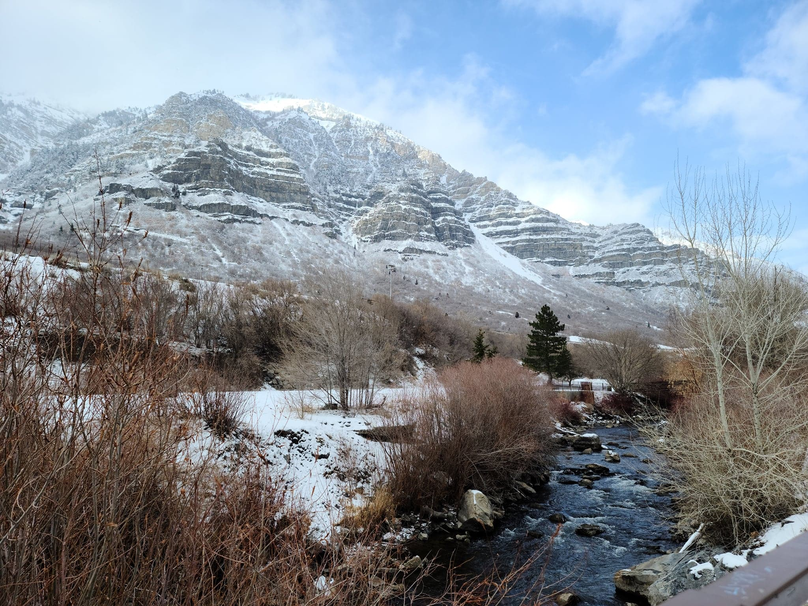

Home
About
Products
Contact

Bridal Veil Falls
Provo, Utah
Bridal Veil Falls is located at the south end of Provo Canyon. The place contains a beautiful waterfall and a nice scenic mountain range. It's a popular hiking trail that stretches for 3.7 miles.